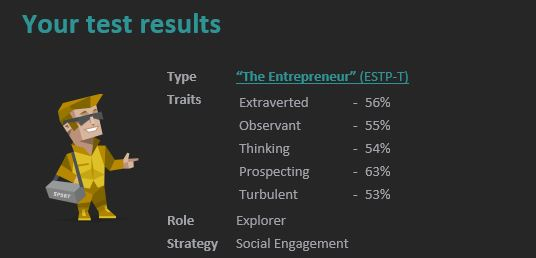
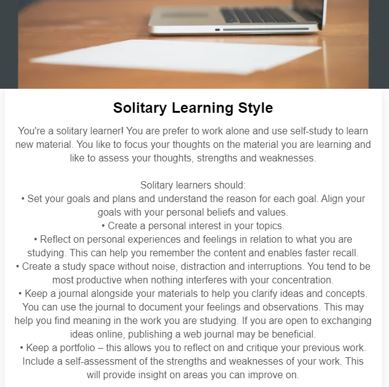
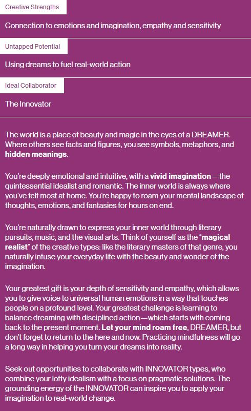
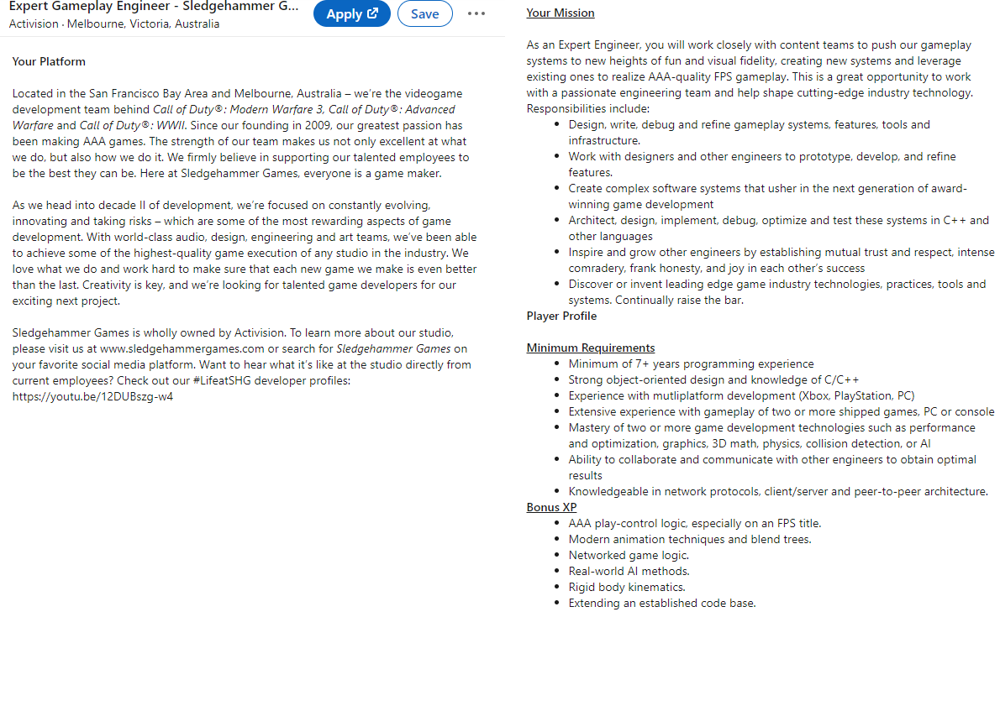

A bit about me: Grew up in a small regional Victorian town called Camperdown where I attended school at Mercy Regional College. This is where I met a lot of my friends, who I still talk to minimum 2 or 3 times a week over Discord.
On weekends I enjoy hanging out with mates which will generally just include having a few bevs and a laugh. I don’t get to see my high school friends as often anymore since most of them went to Melbourne, but these other guys are still cool
I’ve got a little bit over 2 years of experience working in IT Support (1 year as a Trainee) and am currently doing a Full-Time IT Project Management Traineeship which will net me a cert IV in business
I guess for my hobbies, the main ones I’d include would be weightlifting, guitar and a bit of gaming. I’ve also been dabbling in a little bit of 3D modelling lately using Blender which has been a lot of fun.
Fun fact: As much of a geek as I am. I’ve never watched Lord of the Rings or Star Wars and don’t plan to.
My interest in IT stems from growing up in an environment where new technology would be available most of the time. My dad was a bit of a geek and was really into PC gaming, he played a lot of Battlefield and Counter-Strike and was even involved with clans/teams (I’m not sure what they’re referred to as these days). Anyway, because I thought I already had a good understanding of computers, when I finished year 12, I went into a traineeship at Corangamite Shire Council to get a Cert III in Information, Digital Media and Technology. Where I stayed for another year afterwards as a full-time IT Support Officer. But I don’t think my genuine interest in IT really started until I decided to learn a programming language a few years back. As I started to get a good understanding of Python and some of the libraries used for data science, I thought “Hey, doing this for a Job wouldn’t be too bad.” Something about being able to solve problems by typing words just clicked with me, I guess. This interest in programming and problem solving is what led me to come study.
I ended up choosing RMIT after I signed up for Open University Australia’s (OUA) website and received a phone call. I had a quick discussion with the person that rang me, who asked me about my goals, and what I’m hoping to learn and accomplish. I basically told him I wanted to get into the programming side of things and hopefully one day end up working in game development or a software that I would be really passionate about. The OUA guy suggested a bachelor of IT since it is entirely online and wouldn’t clash with any full-time jobs or anything like that.
The conversation with the bloke from Open Universities brought up a good question. What do I expect to learn from my studies? And I think for the most part I’m hoping to learn more efficient ways of programming and different ways of applying the knowledge that I already have. I’m not expecting to finish a Bachelor’s and magically be able to do anything and everything possible with computers. I’m just hoping to develop the knowledge, skills and experience necessary to land a job that I would find challenging and engaging.
At this stage, I think with the things that I enjoy about things that are IT related now. My ideal job would have to be something high level in the gaming industry. Above I’ve provided a link to a job ad for an ‘Expert Gameplay Engineer’ and, while I don’t particularly frag out in Call of Duty personally. I think the mechanics behind the game really do flow and function really well.
My take on this is that to land this kind of job you’ll need a really strong programming background first of all, especially working with C++ and game development. It’s expected that you have both of the aforementioned skills in your arsenal along with a mastery of 2 or more gaming technologies such as: 3D math, Collisions, Animation, Performance and Optimization, etc.
It’s also very beneficial that you have good communication skills and are able to work well with others. This kind of job/project will require input and assistance from others and it’s essential that you’re able to get along well with your colleagues.
It’s also required that you have a little bit of an IT background too as you’re expected to possess knowledge across network protocols, client/server, peer-to-peer.
I feel the skills and experience I currently possess, at the very least, show that I have a very basic understanding of what goes on in software/game development environments. Considering that I have some skill and knowledge of C++, object-oriented programming, 3D modelling, and a pretty decent breadth of IT knowledge. I think I’m on the right track to achieving (at least something pretty close to) my ideal job.
The skills and experience that I’m going to need to land a job like this would stem from a software and game development background. To acquire these skills, I’ll need to learn as much as I can about software and writing code/programs, but also the gaming industry as a whole. Without putting too much detail into the plan here are the steps I feel I’d realistically have to take to achieve this.



I think these results indicate that I’m reasonably well rounded. While I prefer to work alone, I also have no problem working in a group. Also, if the group requires someone to take up a leadership role, I would be very happy to put myself out there a bit and take charge of the project.
In saying that, I’d also not be too bothered if someone else wanted to do this. This can be a learning experience for everyone, and I think that if someone wants to take a chance and develop their communication and leadership skills - then they should have that opportunity to do so.
As for the creative type I tested. I think most of this is true apart from some things said in the second paragraph. I really don’t see myself as a very emotional type of person. I believe that leaving emotions out of things is a better way to deal with problems. Emotions are often like a double-edged sword. In some cases, they can help you make the right choice because you feel so strongly about something and you’re doing what you feel is right. But in other cases, you could be too emotional over a small thing that affects 1 person, which isn’t really going to help out in the grand scheme of things.
I think the personality types I received aren’t a 100% true indicator of who I am as a person, but to some extent they can help me understand myself and others more. For example, if I were to be working in a team and there was a disagreement of some sort, the entrepreneur in me would want to get this under control as quickly as possible so that progress can keep being made.
When creating a team, I would need to take other people’s personalities into consideration. While I do feel that under the right leadership, any group of people can manage to work together to produce and expected outcome. It’s going to be a lot easier if you form a team with specific roles in mind. For example, I feel I’d be a pretty good leader, if I had to be – So I could form a group with someone who has a very strong leadership personality, or, we could just go without that kind of personality and I could fill the role of project manager (assuming the project calls for that).
In saying all this. The reality is that these personality quizzes aren’t 100% accurate and what I test today is extremely subject to change over the next week as my mood changes and I have new experiences with different people. People are constantly changing, and making assumptions about a person based on what they score in one of these online quizzes, probably isn’t a great idea. I really think that you should judge someone’s character based on their actions towards their work, their dreams, and their actions toward yourself and others.
The idea behind this project is pretty simple. I want to create a 3D platformer game using Unity3D in which the player uses a variety of movement mechanics to reach the top of the tower and mark the game as complete. As the player progresses up the tower, they acquire new abilities and skills, the further the player goes the more skills they will have at their disposal and the more challenging the climb will become. By the end, all resources will have to be used and the user will feel accomplished knowing that they managed to solve all the puzzles the game had to offer.
I wanted to create this project as I think some game development experience would benefit me greatly (I want to make it as a game developer after all). I’ve also realised that there is already a market for challenging tower climb games such as ‘Getting Over it’, but I haven’t seen any of these games created in a 3D space. I think adding an extra dimension of complexity to a game like this could lead to some fun and interesting puzzles and more frustrating failures. But hopefully not as frustrating as they are in Getting Over it (the player acquiring new skills and ability as they go up the tower should make it easier to get back to the spot where they last fell)
In essence, this project is to be nothing more than a 3D platformer where the player is required to make their way to the top of a tower/mountain. The game is to feature a variety of different movement mechanics such as:
The movement mechanics in this game are to work in fluently together. For example, it would be ideal if the momentum generated by a short dash could be carried through into a jump.
This game is meant to be relatively short. Approximately 3-8 hours to complete on the first play through.
Movement mechanics are to be unlocked as the player progresses up the tower. With each new movement mechanic unlocked being used throughout the whole stage. Earlier parts of the tower won’t require a certain mechanic until it is unlocked. Ones a mechanic is unlocked however, earlier parts of the stage will become a lot easier.
For example, the first section of the game will only require basic run and jump mechanics to be cleared. After the first section the player will unlock double/triple jumps, allowing the player to clear not only the next section, but also allowing for the first section of the game to be cleared a lot easier as some platforms will not need to be touched.
Let’s say that after the second section of the game the player unlocks the short dash ability. This will allow the player to clear section 3 of the game but also make both sections 1 and 2 easier to complete.
The idea behind this is that there will no longer be a need for checkpoints. Since the further you progress up the tower the more abilities and skills you will unlock. So, in the event that you do fall back down to the bottom of the tower, you will have a much easier time scaling back up to where you were before you failed. This accomplishes a couple of things; first, a player will remember the stages/sections of the game a lot better if they are clearing the same section multiple times. But it will also make the game more fun as the player is rewarded for getting to certain points of the climb.
By the end of the game the player is going to need to use every trick/ability that they have acquired throughout their climb. If the movement mechanics of the game are programmed correctly then momentum from a short dash can be carried into a mid-air jump or a triple jump.
For example, if a player was to go Jump, Double Jump, Short-Dash + Double jump. They should be able to clear a large gap. In some way, having the player have to use every skill that they have acquired on the way will help create a feeling of accomplishment. We don’t want the player thinking that they have cleared huge sections of the game only to never use the second ability again.
As for making sure that the player knows how to actually play the game. I think that the tutorial should speak for itself. I’ve noticed that with a lot of games these days that the tutorial is intrusive and doesn’t immerse the player in the game at all. If the tutorial were to provide basic controls but leave the rest to the player to figure out on their own (with obvious signals and hints) the player will stay immersed in the gameplay and would be more likely to replay the game since they won’t have to sit through a tutorial every time.
The tools and technologies required for this kind of game. At the very least will be a working computer, Unity3D and C#. There are plenty of free resources available online that can be used to generate textures on objects. There are even 3D character models available for everyone to use.
Unity has a library full of free resources that can be used for beginner developers. There are even plugins available that would allow a game developer to create their ideal game without having to write even a single line of code. For a start we will install the 3D game kit and the Bolt asset pack which will assist in creating the mechanics of the game.
The skills required for this kind of project will be some programming skills using C Sharp and some knowledge of how the unity game engine works. Special hardware won’t be required, but having a decent gaming PC that will be able to test the game areas quickly will be ideal. Unity has a whole knowledge base of player scripts that can just be copied and pasted, so finding the skills and software required for this kind of project won’t be extremely difficult. The most difficult part of a project like this will be taking the time to understand how the scripts work and learning to navigate almost every corner of Unity 3D.
The outcome that we are hoping for with this project is to have a finished game with at least 80% of the movement mechanics listed above. We will know that the project is completed when we have a full game from start to finish with different levels of progression. The camera is to follow the player as effectively as possible and the controls are to be intuitive. Remember, the goal here was to make 3D platformer that highlights fun, intuitive and smooth movement mechanics. We will know that this has been accomplished when the game has been published and play testers are able to complete the final level with some effort (the game is meant to be difficult after all).
